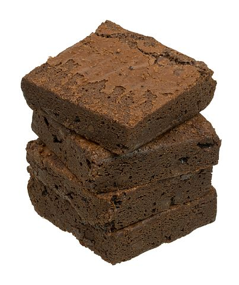

Chocolate Brownie Recipe

A classic chocolate dessert
This recipe is easy to do, and great to do with children who like baking
Ingredients
- Butter
- White Sugar
- Eggs
- Vanilla Extract
- Cocoa Powder
- All purpose Flour
- Salt
- Baking Powder
Steps
- Preheat the oven to 350 degrees F (175 degrees C). Grease and flour an 8-inch square pan.
- Melt 1/2 cup butter in a large saucepan. Remove from heat, and stir in sugar, eggs,
and 1 teaspoon vanilla. Beat in 1/3 cup cocoa, flour, salt, and baking powder. Spread batter
into prepared pan.
- Bake in the preheated oven until top is dry and edges have started to pull away from the sides
of the pan, about 25 to 30 minutes. Let cool briefly before frosting.
- To make the frosting: Combine softened butter, confectioners' sugar, 3 tablespoons
cocoa, honey, and 1 teaspoon vanilla extract in a bowl. Stir until smooth. Frost brownies while they are still warm.